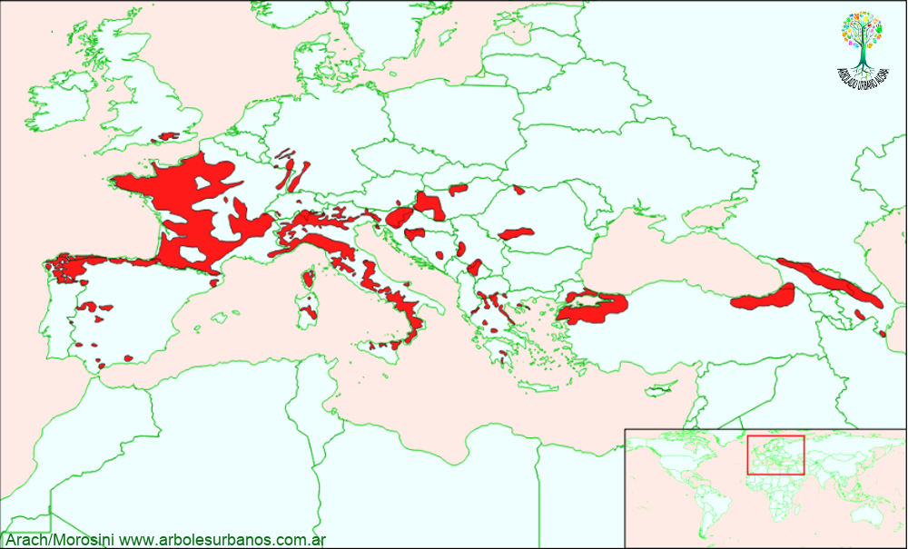

Click en las imágenes para ampliar

{kind=link}
{kind=link}
{kind=link}
{kind=link}
{kind=link}
{kind=link}
- NOMBRE CIENTÍFICO
- Castanea sativa
- FAMILIA BOTÁNICA
- Fagáceas
- UBICACIÓN
- En la Plaza Sarmiento, (casi en la esquina de Avenida San Martín y Sarmiento) también se puede observar algunos en jardines particulares.
- DESCRIPCIÓN GENERAL
- Es un árbol de gran tamaño supera los 35 metros de altura, copa amplia y globosa, tronco recto, su diámetro puede superar holgadamente el metro y medio, corteza, cuando joven lisa al igual que su textura, de color gris, con el paso del tiempo se oscurece y se agrieta de forma espiralada. Hojas estámn dispuestas de forma alterna, son simples, de hasta 20cm de largo y 4 cm. de ancho , de base redondeada y borde dentado, haz de color verde oscuro brillante y envés de color verde claro, para pasar tonos amarillos y ocres en el otoño, donde permanecen en la planta hasta mediados de invierno donde caen.
- FLORES
- Las flores aparecen en el verano, se disponen en un mismo árbol, en amentos separados por sexo, de hasta 15 cm. de largo, aunque es normal encontrarlas juntas formando parte de una misma espiga.
- FRUTOS
- Es una cúpula espinosa, que presenta 4 gajos, en el cual se hallan generalmente de 1 a 3 semillas pudiéndose encontrar de hasta 7 semillas de color castaño.
- ORIGEN
- Originario de Asia Menor, luego se fue distribuyendo por las costas del mar Mediterráneo, más precisamente sur de Europa y norte de África.
- USOS
- Es una especie ornamental y forestal de madera apreciada por su alta la calidad. También se la cultiva por sus semillas comestibles, las castañas.
- REPRODUCCIÓN
- A mediados de otoño normalmente se recogen las semillas, que se conservan en frío (de 4º a 6º), para sembrarlas a principio de la primavera. Poseen un alto poder germinativo.
- PARTICULARIDADES
- Es una especie longeva, hay especimenes registrados de más de 1.000 años. En San martín de los andes fueron talados ejemplares de gran tamaño, que a pesar de ser sanos y relativamente jóvenes, no soportaron la presión inmobiliaria, de la misma manera que la mayoría de las especies vegetales.